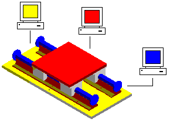
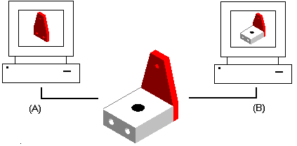
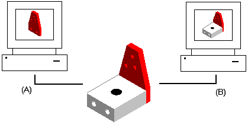
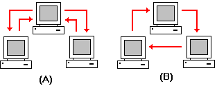

Concurrent design
Concurrent design allows multiple users to access an assembly document simultaneously. To assist in controlling concurrent access, you can define the status of parts and assemblies with the Properties dialog box. You can provide read-only access to the top-level assembly and write-access to the parts and sub-assemblies. This allows multiple users to actually work in the context of the same assembly at the same time, but on different parts.

Another advantage of concurrent design is the ability to update the display to see the changes made to the assembly by other users. In the following example, user A can open a part in an assembly. At the same time, user B can display a read-only version of the entire assembly.

As user A places two additional holes in the part, user B can update the display of the assembly to view any changes made to the assembly.

Baselining documents
You can use the Property Manager command to baseline a document, freezing it and preventing further modification. Documents linked to a baselined document are not frozen. You must either baseline or release any linked documents that you want to freeze from modifications.
The baselined document can then be used as a point of reference if changes are made downstream. Baselining a document also forces later modifications to be made in a new version of the document, instead of the current version.
When you baseline a base document, the individual documents are not automatically set to baselined. You have to manually set the documents that you want to baseline. You can also set the status of the individual documents to released.
Releasing documents
Base documents contain all the links for individual documents. Individual documents can contain parts, floorplans, drawings, and so forth. You can use the Property Manager command to release a base document and its individual documents at the same time, or you can release individual documents.
Routing documents
Routing slips can be used to send documents to one or more users for review. A routing slip allows you to list the users that should receive mail containing the attached document. Documents can be routed to (A) all users at one time or (B) users one after another.

When you route a document to users one after another, and one user completes a review, the document is routed to the next user in the list. When you receive routed documents, you can double-click the attached document in the mail message to activate the appropriate application for viewing the document.
The routing slip can contain a sign-off request for approval or rejection of the contents. The software records all sign-off results. When all the users in the list have approved the document, you can use the Properties command to change the document status to released to freeze the document and prevent further modification.
Routing is disabled for managed documents.
How do I
Display mapped properties containing a specified valueDisplay missing required property data
Create custom document properties
Remove custom document properties
Specify hardware parts
Change the status of a document
Set the units of measure
Learn more
Document propertiesSetting document units
Look up more details
File Properties commandFile Properties dialog box
File Properties dialog box (SEEC)
Edit Profile dialog box
Select dialog box
Properties dialog box (Explorer)